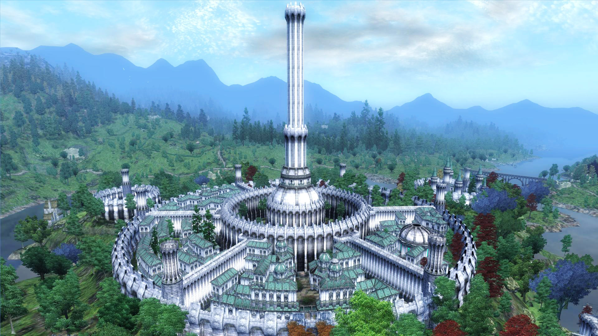

THE ELDER SKROLLS IV OBLIVION

Имперский город (ориг. Imperial City) — город в игре The Elder Scrolls IV: Oblivion.
Имперский город — крупнейший город Сиродила, его столица, а вместе с тем и всей Империи Септимов. Выстроенный вокруг Башни Белого Золота, воздвигнутой в этом регионе древними айлейдами, город находится в самом сердце провинции на большом острове в озере Румаре.
После падения власти айлейдов в 1Э 242 это место стало политическим и религиозным центром новой империи людей. С большой землёй Имперский город связан с помощью крупного моста, ведущего на запад от столицы к деревушке Вейе, где Красная кольцевая дорога, опоясывающая озеро Румаре, соединяется с Чёрной дорогой, следующей на запад к Корролу и границам с Хаммерфеллом. Традиционно считается частью космополитичного Нибенея.